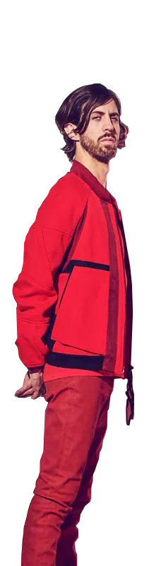

Wayne Sermon
Nacido el 15 de noviembre de 1984 en American Fork, Utah, Wayne Sermon es el guitarrista principal de Imagine Dragons. Comenzó a tocar la guitarra a una edad temprana y estudió música en la Universidad de Berklee en Boston. Sermon se unió a Imagine Dragons en 2009 y ha contribuido a la composición de varias canciones de la banda. Es conocido por su habilidad técnica en la guitarra y su estilo distintivo en las presentaciones en vivo.
Dan Reynolds
Daniel Coulter Reynolds nació el 14 de julio de 1987 en Las Vegas, Nevada. Es el vocalista principal de Imagine Dragons y uno de los miembros fundadores de la banda. Antes de formar la banda, Reynolds estudió en la Universidad Brigham Young, pero decidió dejar sus estudios para dedicarse por completo a la música. Además de su carrera en Imagine Dragons, ha participado en proyectos musicales en solitario y ha sido activista en temas de salud mental y derechos LGBT.
Ben McKee
Benjamin Arthur McKee nació el 7 de abril de 1985 en Forestville, California. Es el bajista de Imagine Dragons y también proporciona coros y percusión adicional en algunas canciones. Antes de unirse a la banda, McKee estudió en la Universidad de Boston, donde conoció a Wayne Sermon. Juntos, decidieron mudarse a Las Vegas y formar Imagine Dragons. Además de su trabajo con la banda, McKee ha incursionado en la producción musical y ha colaborado con otros artistas.
Daniel Platzman
Nacido el 28 de septiembre de 1986 en Atlanta, Georgia, Daniel Platzman es el baterista de Imagine Dragons. Antes de unirse a la banda en 2011, Platzman estudió música y psicología en la Universidad de Berklee. Además de tocar la batería, también es un talentoso multiinstrumentista y ha contribuido con otros instrumentos en las grabaciones de la banda. Platzman es reconocido por su energía en el escenario y su habilidad para crear ritmos dinámicos.